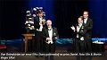

Dan Brändström
Professor, univ.lektor, rektor, direktör mm..
| Född: | 1941 Ekträsk, Degerfors fs, Degerfors sn (AC). [1] |
|---|
| Levde: | 1950 Ekträsk 1:67, Ekträsk, Degerfors fs, Degerfors sn (AC). [2] |
|---|
| Levde gifta: | 1970 Tegs fs, Umeå kn. [3] |
|---|
| Barn: |
|---|
| Viktoria Brändström (1971 - ) |
| Vigsel: | 1989 Umeå, Ålidhems fs, Umeå kn. [4] |
|---|
Noteringar
Dan Brändström är en svensk statsvetare, utredare och direktör.
Brändström bedrev statsvetenskapliga studier i Uppsala och Umeå innan han 1972 disputerade vid Umeå universitet, på en avhandling om nomineringsförfarandet vid riksdagsval.
Han var därefter verksam som universitetslektor, studierektor, prefekt och åren 1975–77 rektor vid Socialhögskolan i Umeå, samt åren 1977–1982 kanslichef vid Regionstyrelsen i Umeå högskoleregion. Han blev docent 1982 och arbetade sedan åren 1982–1992 som universitetsdirektör vid Umeå universitet.
Brändström var 1993–2006 vd för Riksbankens jubileumsfond. Han har efter 2007 (och även tidigare) varit verksam som forskningspolitisk utredare åt regeringen. Han blev år 2000 ordförande i Folkuniversitetets förbundsstyrelse och 2010 ordförande i Linnéuniversitetets styrelse.
Brändström invaldes 1996 som ledamot av Kungl. Ingenjörsvetenskapsakademien (IVA), 1999 som ledamot av Vetenskapsakademien, 2005 som hedersledamot av Vitterhetsakademien och 2011 som ledamot i styrelsen för Silvermuseet. Han erhöll 2001 professors namn.
Bibliografi (i urval)
Brändström, Dan (1971). Nomineringsförfarande vid riksdagsval: en studie av partiernas kandidatnomineringar inför 1970 års riksdagsval. Umeå. Libris 21091
urn.kb.se/resolve?urn=urn:nbn:se:umu:diva-67999
umu.diva-portal.org/smash/get/diva2:615285/FULLTEXT02.pdf
Brändström, Dan (1992). Distansutbildning - undervisningsform i tiden. Projektrapport / UHÄ, FoU - Universitets- och högskoleämbetet, Forskning och utveckling för högskolan, 0281-3335 ; 1992:5. Stockholm: FoU-enheten, UHÄ. Libris 1543888
libris.kb.se/bib/1543888?tab1=vers#more_info
Brändström, Dan (2006). ”Humaniora och samhällsvetenskap i ett Europaperspektiv”. Kungl. Vitterhets historie- och antikvitetsakademiens årsbok 2006,: sid. [149]-159. 0083-6796. ISSN 0083-6796. Libris 10324810
Brändström, Dan (2012). Universitet med Folkuniversitetet: andlig odling på vetenskaplig grund : en personlig betraktelse med utgångspunkt i femtio års erfarenhet från högre utbildning och folkbildning. [Folkuniversitet (skriftserie)], 1102-1594. Stockholm: Folkuniversitetet. Libris 13928540. ISBN 9789197683760
libris.kb.se/hitlist?q=WFRF%3A%28Br%C3%A4ndstr%C3%B6m+Dan+1941+%29&d=libris&m=10&p=1&hist=true&noredirect=true
Källor
Tryckt litteratur
Kungl. Vetenskapsakademiens årsberättelse 1999 (Documenta no. 69). Stockholm: Kungl. Vetenskapsakademien. 2000. Libris 3682164
Externa länkar
Dan Brändström på Kungliga Vetenskapsakademiens webbplats
www.kva.se/sv/om-oss/kontakt/dan-brandstrom
Personhistoria
| Årtal | Ålder | Händelse |
|---|
| 1941 |
|
Födelse 1941 Ekträsk, Degerfors fs, Degerfors sn (AC) [1] |
| 1948 |
|
Makan Ingegerd Brändström föds 1948 Västerbotten [2] |
| 1950 |
|
Systern Doris Brändström föds 1950 Ekträsk 1:67, Ekträsk, Degerfors fs, Degerfors sn (AC) [2] |
| 1950 |
|
Levde 1950 Ekträsk 1:67, Ekträsk, Degerfors fs, Degerfors sn (AC) [2] |
| 1970 |
|
Levde gifta Vivi-Anne Lundberg 1970 Tegs fs, Umeå kn [3] |
| 1971 |
|
Dottern Viktoria Brändström föds 1971 Umeå, Umeå kn [5] |
| 1989 |
|
Vigsel Ingegerd Brändström 1989 Umeå, Ålidhems fs, Umeå kn [4] |
| 1995 |
|
Fadern Johan Gunnar Brändström dör 1995-11-10 Ekträsk 136, Vindeln, Vindelns fs, Vindelns kn [6] |
| 1998 |
|
Modern Göta Sofia Tjernqvist dör 1998-07-05 N Gimonäsvägen 12, Sofieborg. Ålidhems fs, Umeå kn [7] |
Dokument
Källor
| [1] | SCB Födda AC Degerfors (Vindeln) 83/1941 |
| |
| | |
| [2] | Mtl Sveriges befolkning 1950 |
| |
| | |
| [3] | Mtl Sveriges befolkning 1970 |
| |
| | |
| [4] | Mantalslängd 1991, Västerbottens län |
| |
| | |
| [5] | Mtl Sveriges befolkning 1975 |
| |
| | |
| [6] | RTB 95, SPAR 92f, SPAR 96, SDB7_02302950 |
| |
| | |
| [7] | RTB 98, SPAR 92f, VB, SDB7_03680028 |
| |
|
|
2010-09-24. Dan Brändström, ordförande i Linnéuniversitetets styrelse
Author; Vogler
commons.wikimedia.org/wiki/File:Dan_Br%C3%A4ndstr%C3%B6m_2010.jpg
|
| |
|  |
2016-11-01. Den finaste, Stora guldmedaljen, gick i år till professor Dan Brändström. Han är statsvetare, och har varit universitetsdirektör för Umeå universitet och sitter i dag i styrelsen för Linnéuniversitetet.
Dan Brändström får utmärkelsen för ”sina utomordentliga insatser och djupa engagemang för svensk och europeisk forskning och högre utbildning" som en del av motiveringen lyder.
IVA = Kungliga Ingenjörsvetenskapsakademien
www.nyteknik.se/ingenjorskarriar/de-fick-iva-s-guldmedaljer-6800781
|
| |
|
(början av 1970-talet). Några av Statsvetenskapliga institutionens lärare och forskare i början av 1970-talet.
Fr.v. Kjell Lundmark, Harry Forsell, Pär-Erik Back, Sten Markgren, Gunnel Gustafsson och Dan Brändström.
Foto: VK Västerbottens-Kuriren, Umeå
|
|
{kind=link}
{kind=link}
{kind=link}